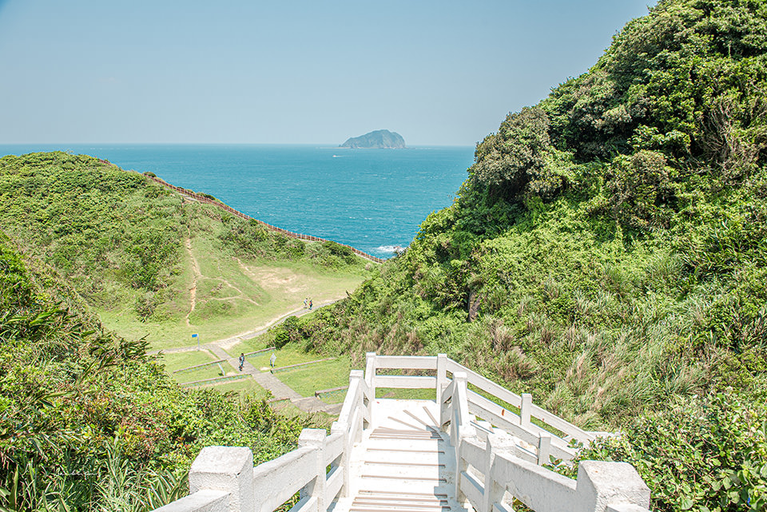
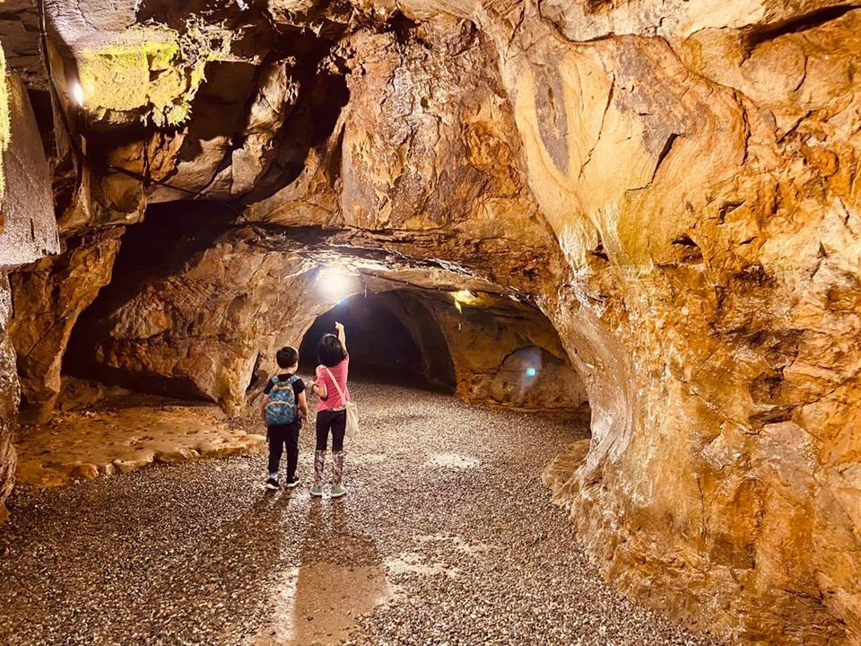

基隆擁抱著海洋與山丘，愜意的吹著山風俯瞰海洋，亦或是沿著海岸望向山丘，都是遊歷基隆的最佳選擇
忘憂谷
基隆市八斗子漁港旁的美麗山谷，與山海相依，望幽谷是一個V字型的山谷，可在綠油油的草地放鬆也可看到八斗子漁港來往的漁船，以及可眺望到遠處的基隆嶼，遊客至此，在環狀的稜線及山谷步道，漫步於山谷草地，走於臨崖的稜線，遠眺海天，俯瞰崖下的海蝕平台豆腐岩，還有雄奇可觀的臨海峭壁，夜晚時分海面上漁火點點與九份山城的燈火，形成一齣唯美的山海之戀。
望幽谷濱海步道
基隆市公車總站搭103號公車至「八斗子站」下車
停車場 65高地收費停車場
老鷹岩
老鷹岩觀景台可以俯瞰著大武崙澳底漁港，遠處那小小凸出的石頭則是基隆嶼，觀景台旁的基石有一個明顯的控制點，除了這裡的展望台角度特別好之外，沿著回程的路上也可以到城堡觀景台 ，而那邊的高度則是可以看到整個情人湖的高點，試著在這附近找看看有沒有不同角度可以看到漁港的位置。
基隆市中山區大武崙砲台步道內
搭乘基隆市公車509號「情人湖站」下車
上下兩處停車場
佛手洞
佛手洞之名係因洞內深處的石壁上方，有天然風化形成像是手掌和五指的節理，唯妙唯肖就像是佛的手印，加上又位於「仙洞巖」隔壁，所以被取名「佛手洞」，佛手洞內有數個走道分別通往不同洞窟，走入洞穴有種探險掘密的新鮮觸動，陰涼感受又如天然冷氣，十分特殊。
基隆市中山區仁安街11號
搭乘基隆市公車301、302號於「仙洞巖站」下車
洞前廣場及道路旁可免費停車
猜你也想去